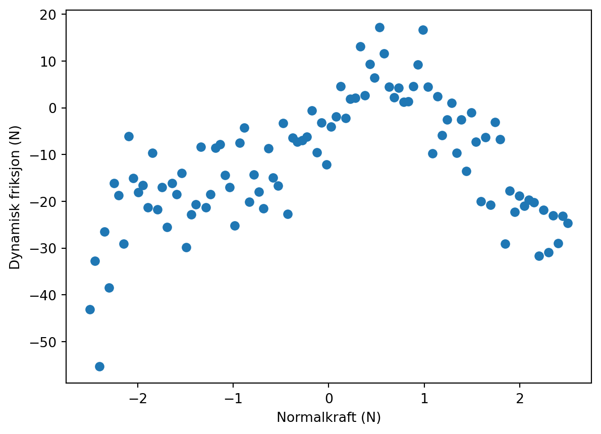
Forelesningsnotat: Trening, testing, kryssvalidering, overtrening
Henrik Sveinsson
Fra Default-tutorialen
GÅ igjennom manuell tilpasning av logistisk funksjon til Default-datasettet.
Premiss
Jeg har laget meg en funksjon som er på formen
\[p(x) = c_0 + c_1 x + c_2x^2 + \cdots = \sum_{i=0}^\infty c_i x^i\]
Så har jeg trukket noen tall \(y = p(x) + \varepsilon\), der verdiene \(\varepsilon\) er normalfordelt.
Men jeg holder c´ene hemmelige for dere, og jeg holder standardavviket i normalfordelingen hemmelig for dere.
Datasettet
Dette er slik det datasettet jeg har trukket ser ut:
Det kan lastes ned her.
Overordnet oppgave for økta
Finne best mulig estimat for \(\{c_i\}\). Dette innebærer i hovedsak å finne ut hvor høye \(i\) vi skal gå til, altså hvor store polynomer \[p(x) = c_0 + c_1 x + c_2x^2 + \cdots = \sum_{i=0}^\infty c_i x^i\]
Lese inn datasettet:
import numpy as np
data = np.loadtxt("data/hemmelig_funksjon.txt")
print(data)
x = data[:,0]
y = data[:,1][[-2.50000000e+00 -4.30998734e+01]
[-2.44949495e+00 -3.26987345e+01]
[-2.39898990e+00 -5.52854260e+01]
[-2.34848485e+00 -2.64284688e+01]
[-2.29797980e+00 -3.84960068e+01]
[-2.24747475e+00 -1.60790906e+01]
[-2.19696970e+00 -1.86770254e+01]
[-2.14646465e+00 -2.91149443e+01]
[-2.09595960e+00 -6.11836062e+00]
[-2.04545455e+00 -1.50227974e+01]
[-1.99494949e+00 -1.81119780e+01]
[-1.94444444e+00 -1.65905377e+01]
[-1.89393939e+00 -2.12568736e+01]
[-1.84343434e+00 -9.62635475e+00]
[-1.79292929e+00 -2.17751798e+01]
[-1.74242424e+00 -1.70026584e+01]
[-1.69191919e+00 -2.55251597e+01]
[-1.64141414e+00 -1.61060757e+01]
[-1.59090909e+00 -1.85088369e+01]
[-1.54040404e+00 -1.40123432e+01]
[-1.48989899e+00 -2.97722450e+01]
[-1.43939394e+00 -2.28487165e+01]
[-1.38888889e+00 -2.06196657e+01]
[-1.33838384e+00 -8.34302038e+00]
[-1.28787879e+00 -2.12597816e+01]
[-1.23737374e+00 -1.85375108e+01]
[-1.18686869e+00 -8.51863427e+00]
[-1.13636364e+00 -7.84281649e+00]
[-1.08585859e+00 -1.43893080e+01]
[-1.03535354e+00 -1.70080645e+01]
[-9.84848485e-01 -2.52287943e+01]
[-9.34343434e-01 -7.46827788e+00]
[-8.83838384e-01 -4.20727167e+00]
[-8.33333333e-01 -2.01172945e+01]
[-7.82828283e-01 -1.42435178e+01]
[-7.32323232e-01 -1.79813866e+01]
[-6.81818182e-01 -2.15525632e+01]
[-6.31313131e-01 -8.62162620e+00]
[-5.80808081e-01 -1.48933104e+01]
[-5.30303030e-01 -1.66653963e+01]
[-4.79797980e-01 -3.26441443e+00]
[-4.29292929e-01 -2.27294730e+01]
[-3.78787879e-01 -6.39051535e+00]
[-3.28282828e-01 -7.26030695e+00]
[-2.77777778e-01 -6.91538326e+00]
[-2.27272727e-01 -6.16544677e+00]
[-1.76767677e-01 -5.84873488e-01]
[-1.26262626e-01 -9.57800773e+00]
[-7.57575758e-02 -3.13795504e+00]
[-2.52525253e-02 -1.20919746e+01]
[ 2.52525253e-02 -3.97828128e+00]
[ 7.57575758e-02 -1.89130952e+00]
[ 1.26262626e-01 4.55607660e+00]
[ 1.76767677e-01 -2.20442195e+00]
[ 2.27272727e-01 1.85921687e+00]
[ 2.77777778e-01 2.15298119e+00]
[ 3.28282828e-01 1.31827583e+01]
[ 3.78787879e-01 2.67761036e+00]
[ 4.29292929e-01 9.30574969e+00]
[ 4.79797980e-01 6.47882568e+00]
[ 5.30303030e-01 1.72505807e+01]
[ 5.80808081e-01 1.15839155e+01]
[ 6.31313131e-01 4.53477786e+00]
[ 6.81818182e-01 2.25102486e+00]
[ 7.32323232e-01 4.33169718e+00]
[ 7.82828283e-01 1.31314261e+00]
[ 8.33333333e-01 1.35134770e+00]
[ 8.83838384e-01 4.61298306e+00]
[ 9.34343434e-01 9.23672856e+00]
[ 9.84848485e-01 1.66842812e+01]
[ 1.03535354e+00 4.48689914e+00]
[ 1.08585859e+00 -9.74590045e+00]
[ 1.13636364e+00 2.40751597e+00]
[ 1.18686869e+00 -5.86980559e+00]
[ 1.23737374e+00 -2.52396593e+00]
[ 1.28787879e+00 1.04290087e+00]
[ 1.33838384e+00 -9.60840164e+00]
[ 1.38888889e+00 -2.49422729e+00]
[ 1.43939394e+00 -1.35700524e+01]
[ 1.48989899e+00 -1.01926018e+00]
[ 1.54040404e+00 -7.29316159e+00]
[ 1.59090909e+00 -1.99989544e+01]
[ 1.64141414e+00 -6.33228306e+00]
[ 1.69191919e+00 -2.07056401e+01]
[ 1.74242424e+00 -3.01512622e+00]
[ 1.79292929e+00 -6.76592729e+00]
[ 1.84343434e+00 -2.90505187e+01]
[ 1.89393939e+00 -1.77320961e+01]
[ 1.94444444e+00 -2.22495263e+01]
[ 1.99494949e+00 -1.88432281e+01]
[ 2.04545455e+00 -2.10084218e+01]
[ 2.09595960e+00 -1.97315339e+01]
[ 2.14646465e+00 -2.01852203e+01]
[ 2.19696970e+00 -3.16092294e+01]
[ 2.24747475e+00 -2.18156289e+01]
[ 2.29797980e+00 -3.09277432e+01]
[ 2.34848485e+00 -2.29934136e+01]
[ 2.39898990e+00 -2.89183290e+01]
[ 2.44949495e+00 -2.31338756e+01]
[ 2.50000000e+00 -2.46218930e+01]]Tilfeldig gjettet \(i_\mathrm{max}\)
Test av forskjellige polynomer
from lammps_logfile import get_color_value
plt.plot(x, y, "o")
for i in range(1,15):
p = np.polyfit(x, y, i)
xv = np.linspace(-2.5, 2.5, 200)
plt.plot(xv, np.polyval(p, xv), c=get_color_value(i, 0, 15, cmap="jet"), label=f"{i}")
plt.legend()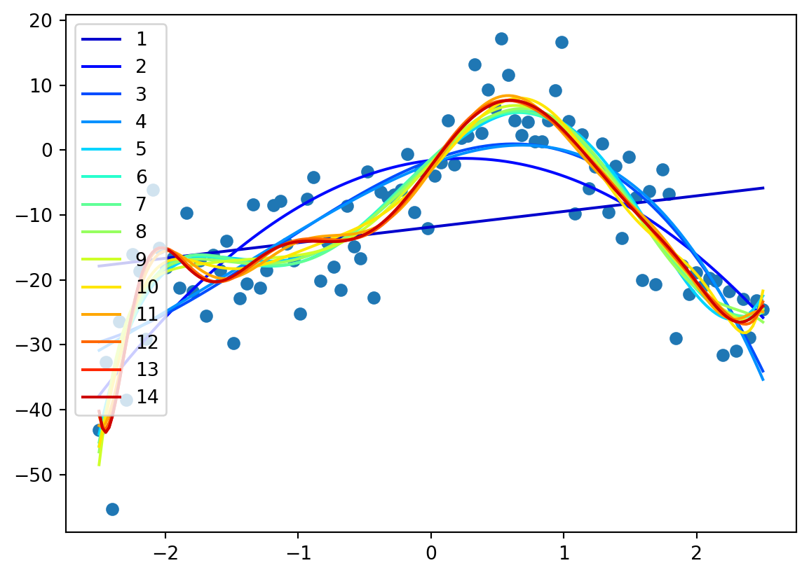
Vi skjønner kanskje at vi må stoppe et sted, men hvor?
Mean squared error
Vi har et datasett med verdier \(\{x_i, y_i\}\). Vi lager oss et polynom \(p(x)\), som vi bruker til å estimere y-verdier, altså \(\hat{y} = f(x)\).
Vi ønsker å minimere
\[\sum_{i=1}^N (\hat{y}_i - y_i)^2 = \sum_{i=1}^N (\hat{f}(x_i) - y_i)^2\]
Mean squared error
Underveisoppgave
- Last inn datasettet trukket fra den hemmelige fordelingen.
- Plott datasettet for å verifisere at det er korrekt innlest.
- Gjør polynomtilpasning med \(p(x)=\sum_{i=0}^N c_i x^i\) for \(N\) opp til \(20\). Plott de forskjellige polynomene på intervallet \([-2.5, 2.5]\)
- Finn treningsfeilen, altså \(\sum_{i=0}^n (p(x_i)-y_i)^2\), for hver polynomgrad N, og plott feilen som funksjon av N.
Starthjelp
Løsning
plt.subplot(1,2,1)
plt.plot(x,y, "o")
N = 5
training_errors = np.zeros(N+1)
for i in range(N+1):
p = np.polyfit(x, y, i)
xv = np.linspace(-2.5, 2.5, 200)
plt.subplot(1,2,1)
plt.plot(xv, np.polyval(p, xv), c=get_color_value(i, 0, N, cmap="jet"), label=f"{i}")
training_errors[i] = np.mean((np.polyval(p, x)-y)**2)
plt.legend()
plt.subplot(1,2,2)
plt.plot(training_errors)
plt.xlabel("Grad av polynom")
plt.ylabel("Treningsfeil")
plt.tight_layout()Løsning
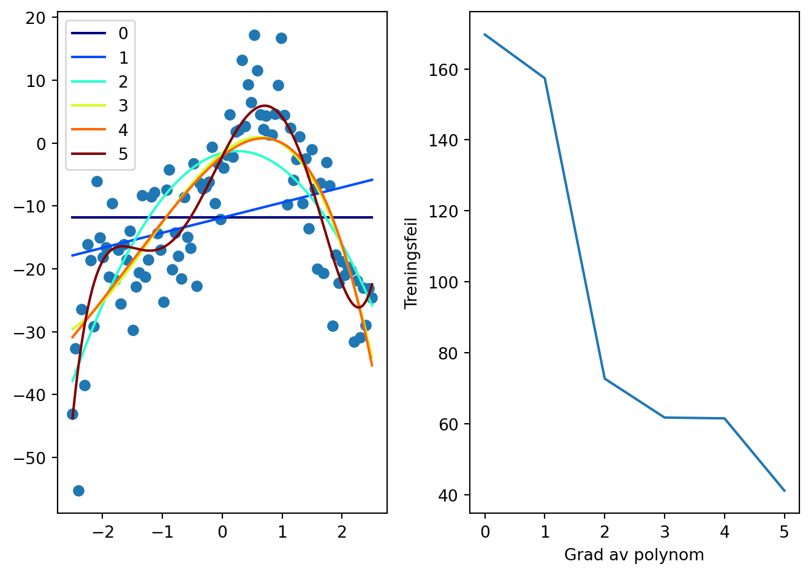
Øke N
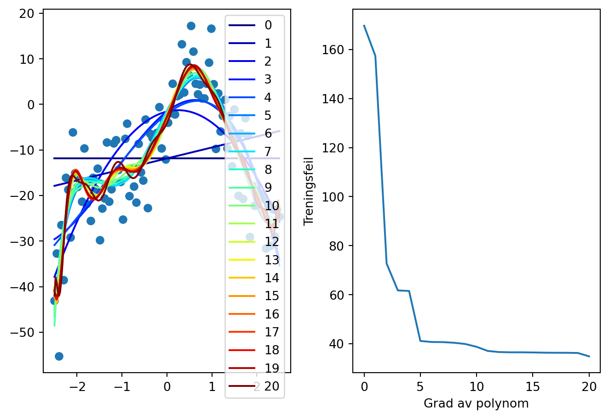
- Hva kan vi lære om hvilken N vi bør velge av dette?
Validerings-trenings-splitt 50/50
- Vi deler datasettet i to deler, hvorfor det?
plt.figure(figsize=(8,6))
x1 = np.linspace(-2.5, 2.5, 12)
x2 = np.linspace(-2.5, 2.5, 8)
y1 = f(x1, Cs) + np.random.normal(0, sigma, 12)
y2 = f(x2, Cs) + np.random.normal(0, sigma, 8)
p = np.polyfit(x1, y1, 10)
plt.plot(x1, y1, "o", label="Trening")
plt.plot(x2, y2, "o", label="Validering")
x3 = np.linspace(-2.5, 2.5, 100)
y3 = np.polyval(p, x3)
plt.plot(x3, y3,":", c="k", label="Modell")
plt.ylim([-55, 20])
plt.legend()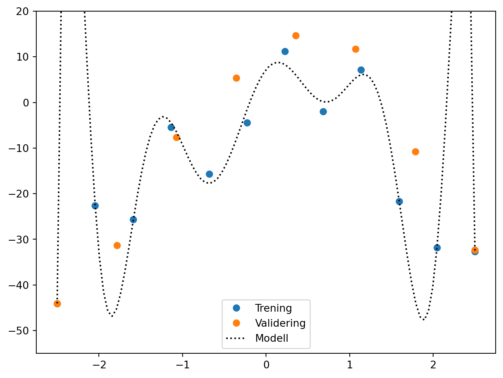
Eksempel på datasplitting
Oppgave
- Print indeksene for treningsdata og valideringsdata.
- Verifiser (med programmering) at indeksene i treningsdata og valideringsdata er forskjellige.
- Plott treningsdata og valideringsdata i forskjellige farger for å verifisere at de er tilfeldig, og ikke systematisk, trukket!
Løsning
Test-train-split 50/50
- Nå ønsker vi å sammenligne gjennomsnittlig kvadrert feil for treningsdata og valideringsdata ved forskjellige valg av høyeste mulige grad av polynom, for eksempel om vi setter høyeste grad til 20 har vi: \[p(x) = \sum_{i=0}^{20} c_i x^i\]
Oppgave
- Skriv opp hvordan vi konseptuelt kan gjøre dette
Implementasjon
(her skal vi gå igjennom koden linje for linje! Rop om jeg ikke gjør det)
plt.subplot(1,2,1)
plt.plot(x,y, "o")
N = 15
training_errors = np.zeros(N+1)
validation_errors = np.zeros(N+1)
for i in range(N+1):
p = np.polyfit(x_train, y_train, i)
xv = np.linspace(-2.5, 2.5, 200)
plt.subplot(1,2,1)
plt.plot(xv, np.polyval(p, xv), c=get_color_value(i, 0, N, cmap="jet"), label=f"{i}")
training_errors[i] = np.mean((np.polyval(p, x_train)-y_train)**2)
validation_errors[i] = np.mean((np.polyval(p, x_validate)-y_validate)**2)
plt.subplot(1,2,2)
plt.plot(training_errors, label="training error")
plt.plot(validation_errors, label="test error")
plt.xlabel("Grad av polynom")
plt.ylabel("Treningsfeil")
plt.legend()
plt.tight_layout()Implementasjon
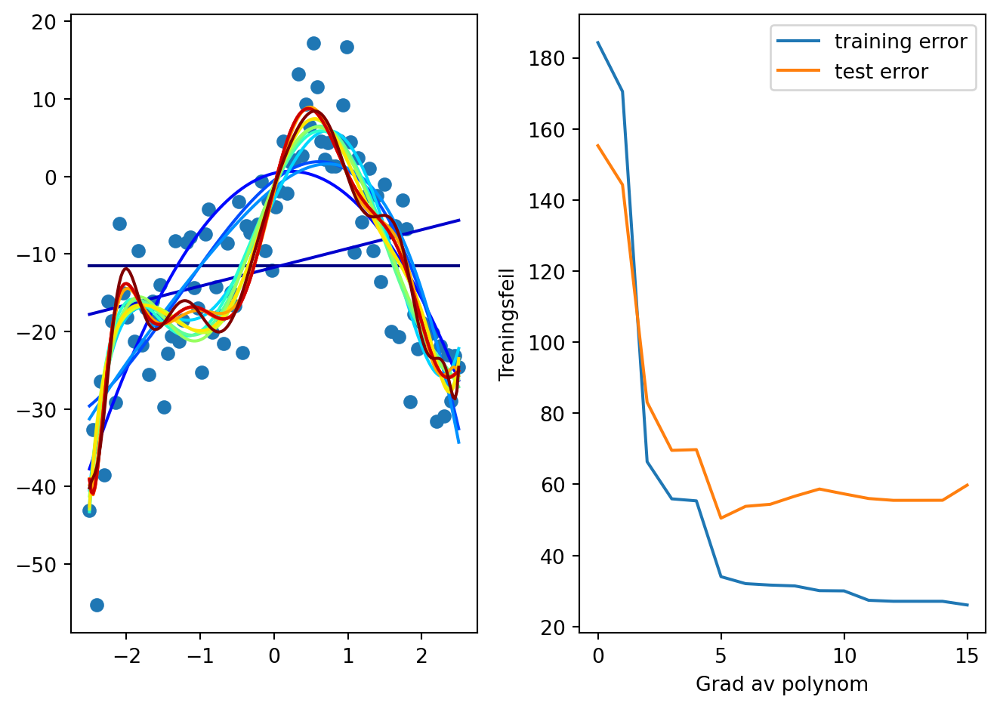
Foreløpig oppsummering
- Vi har funnet ut at et polynom av grad mellom 3 og 8 bør kunne funke. Kan vi gjøre det bedre?
Kryssvalidering med k omganger (k-fold)!
| Omgang | Partisjon 1 | Partisjon 2 | Partisjon 3 | Partisjon 4 | Partisjon 5 |
|---|---|---|---|---|---|
| 1 | 🟥 Validering | 🟦 Trening | 🟦 Trening | 🟦 Trening | 🟦 Trening |
| 2 | 🟦 Trening | 🟥 Validering | 🟦 Trening | 🟦 Trening | 🟦 Trening |
| 3 | 🟦 Trening | 🟦 Trening | 🟥 Validering | 🟦 Trening | 🟦 Trening |
| 4 | 🟦 Trening | 🟦 Trening | 🟦 Trening | 🟥 Validering | 🟦 Trening |
| 5 | 🟦 Trening | 🟦 Trening | 🟦 Trening | 🟦 Trening | 🟥 Validering |
Oppgave
Dere skal nå dele opp datasettet i 5 partisjoner, og verifiser med et plott at det har gått bra.
Beskriv først med ord hva som skal til for å dele opp i 5 partisjoner.
Dette er slik vi delte i treningsdata og valideringsdata tidligere:
Løsning
np.random.seed(0)
indices = np.random.permutation(len(x))
partitions = np.array_split(indices, 5)
colors = ["r", "g", "b", "c", "m"]
plt.figure(figsize=(8, 4))
for i, partition in enumerate(partitions):
plt.plot(x[partition], y[partition], "o", label=f"Partisjon {i+1}", color=colors[i])
plt.legend()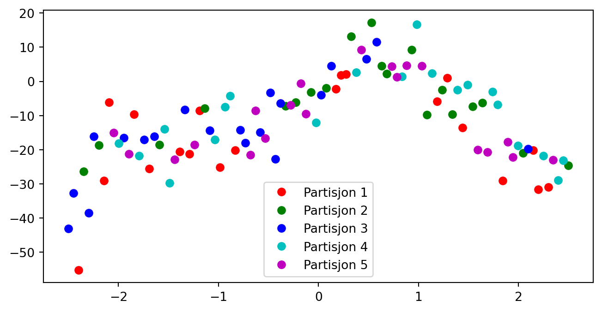
Dele opp i 5 omganger
Det er kanskje ikke helt åpenbart, men det å dele opp i 5 omganger er ikke det samme som å dele opp i 5 partisjoner.
Oppgave
Del opp i 5 omganger, og visualiser disse.
Tilpasse polynom til hver omgang
fig, axs = plt.subplots(2, 3, figsize=(9, 6), sharey=True)
axs = axs.flatten()
for i, partition in enumerate(partitions):
train_idx = np.setdiff1d(indices, partition)
p = np.polyfit(x[train_idx], y[train_idx], 4)
axs[i].plot(x[train_idx], y[train_idx], "o", color="lightgray", label="Treningsdata")
axs[i].plot(x[partition], y[partition], "o", color="blue", label="Valideringsdata")
xv = np.linspace(-2.5, 2.5, 100)
yv = np.polyval(p, xv)
axs[i].plot(xv, yv, "k")
axs[5].plot(xv, yv)
axs[i].set_title(f"Omgang {i+1}")
axs[i].legend()
plt.tight_layout()Tilpasse polynom til hver omgang
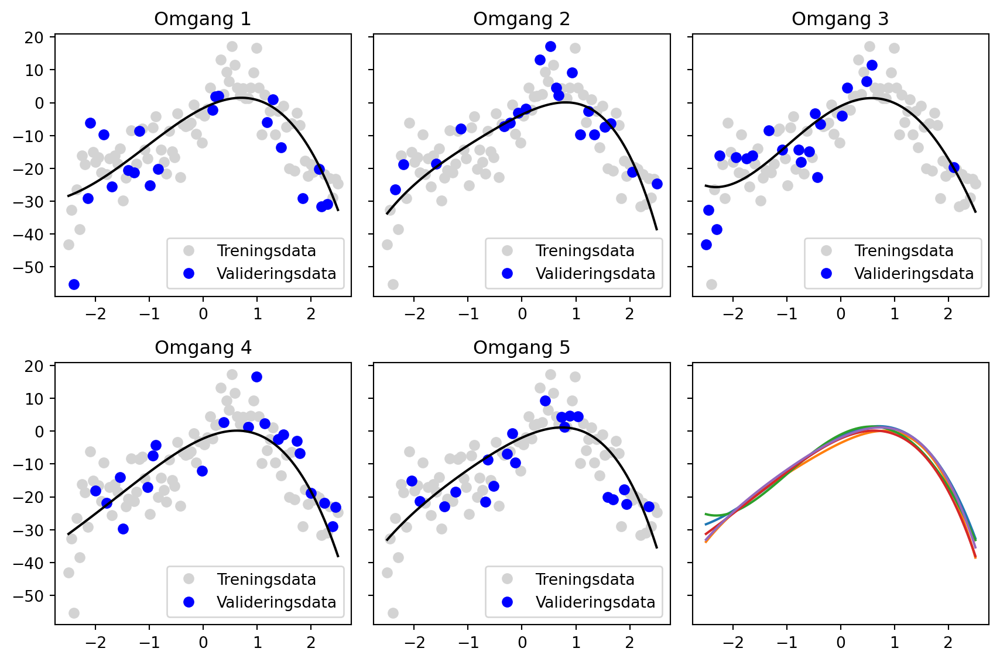
Tilfellet \(i_\mathrm{max}=4\)
70.96934537774104Snitt av alle omganger, for mange \(i_\mathrm{max}\)
Vi ønsker nå å bruke kryssvalidering med k omganger til å sammenligne hvor bra modellene blir med forskjellige valg av \(i_\mathrm{max}\).
Snitt av alle omganger, for mange \(i_\mathrm{max}\)
folds = np.array_split(indices, 5)
i_max = 15
mse_values = np.zeros(i_max)
for fold in folds:
train_idx = np.setdiff1d(indices, fold)
for i in range(i_max):
p = np.polyfit(x[train_idx], y[train_idx], i)
mse = np.mean((np.polyval(p, x[fold])-y[fold])**2)
mse_values[i] += mse
mse_values /= len(folds)
plt.plot(mse_values)
plt.plot([0, 10], [49, 49], "--", c="k")Snitt av alle omganger, for mange \(i_\mathrm{max}\)
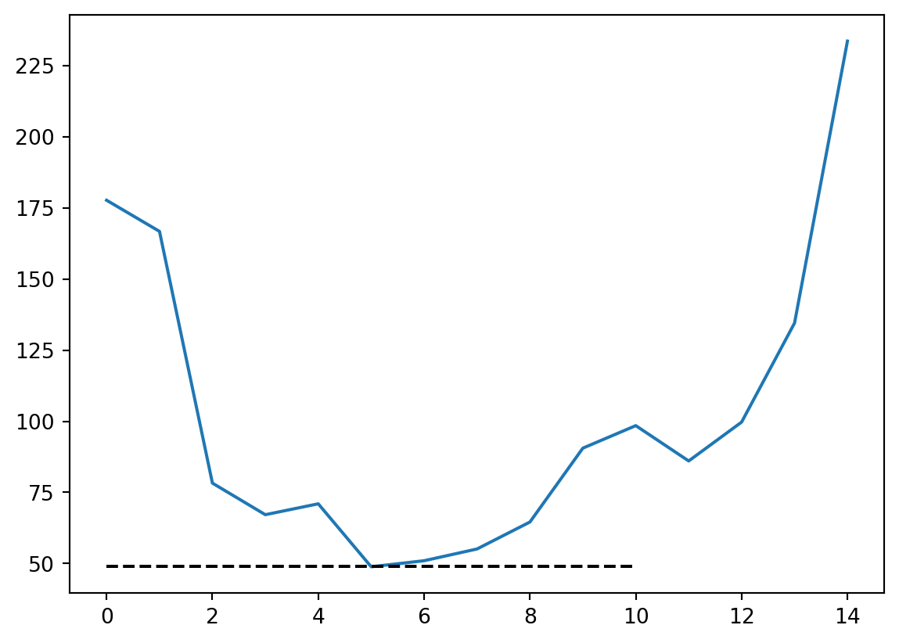
Peker mot \(i_\mathrm{max} = 5?\)
[-2.10654956 18.74401723 -4.00555715 -9.51306655 -0.15289326 1.15123423]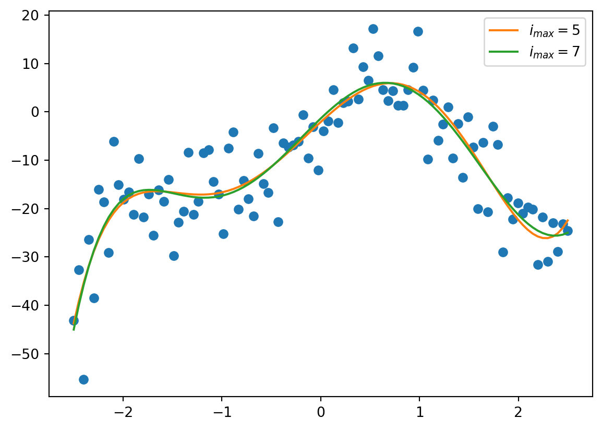
Sammenligning av \(\{c_i\}\)
Fasit: [0, 20, -8, -10.7, 1.2, 1.6, -0.15, -0.05]
Beste modell: [-2.10654956 18.74401723 -4.00555715 -9.51306655 -0.15289326 1.15123423]
Beste modell når vi kjenner $i_{max}$: [ -1.369465 19.46976614 -6.43603876 -10.53909373 0.99185812
1.50576443 -0.13178075 -0.03446598]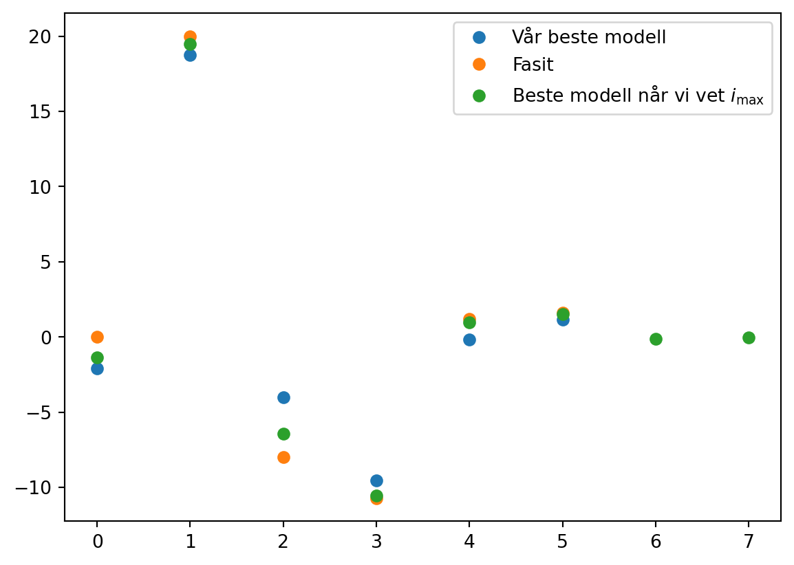
Måter å gjøre ting enklere på
I stedet for np.array_split manuelt, kan vi kjøre
Måter å gjøre ting enklere på
For kryssvalidering kan vi i stedet for np.array_split kjøre sklearn.model_selection.KFold.
- Men obs!
Måter å gjøre ting enklere på
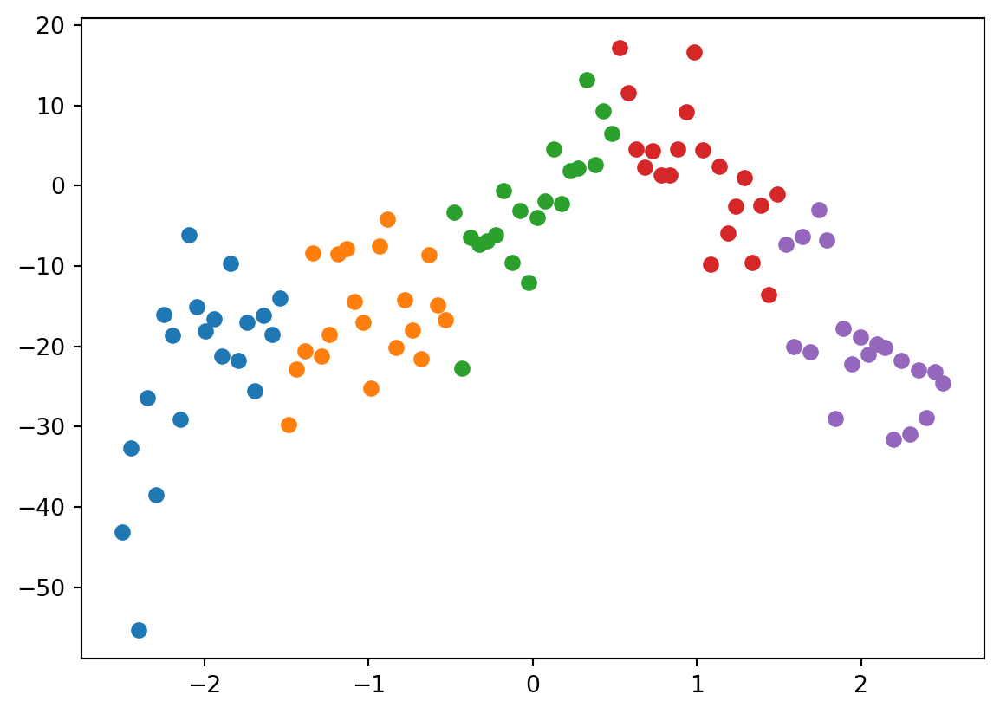
Måter å gjøre ting enklere på
Må passe på at autometodene ikke lurer oss! Her måtte vi oppgi at dataene skulle stokkes, siden de var sortert etter x-aksen fra før.
Måter å gjøre ting enklere på
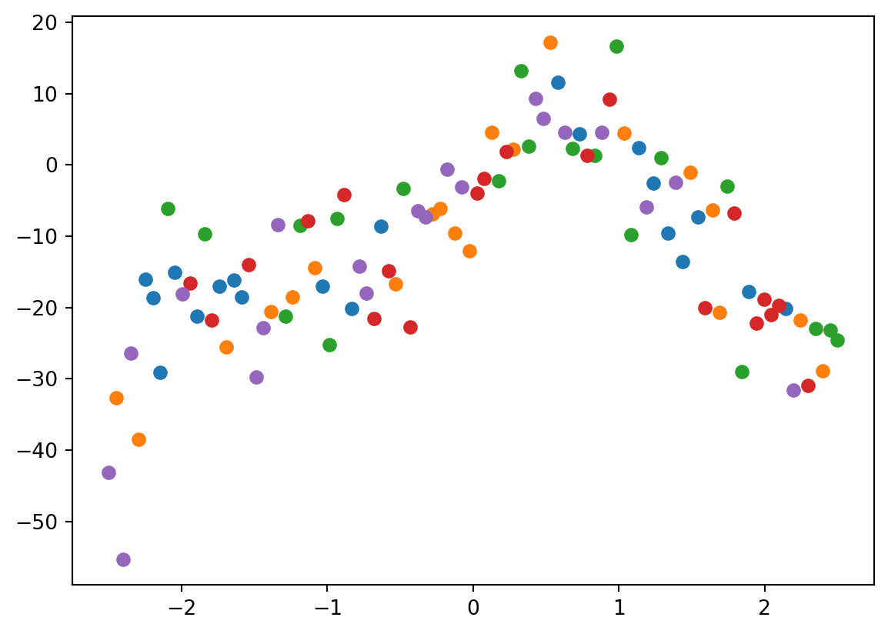
Kryssvalidering
Vi bruker kryssvalidering for å
- Hindre overtilpasning. Om testfeilen er mye større enn treningsfeilen har vi typisk overtilpasset
- Utnytte data godt. Kryssvalidering gir et godt estimat på hva som er usikkerheten når vi trener på alle dataene våre.
Hvorfor k omganger, og ikke leave one out kryssvalidering?